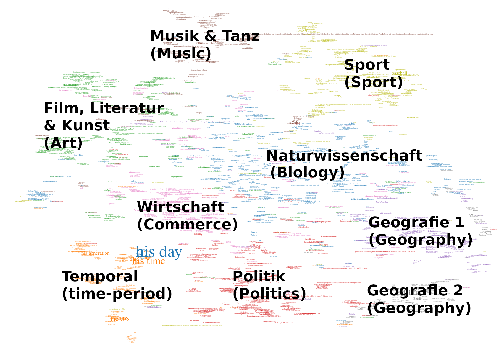

<!doctype html>
<html lang="de">
  <head>
    <meta charset="utf-8" />
    <meta name="viewport" content="width=device-width, initial-scale=1.0, maximum-scale=1.0, user-scalable=no" />

    <title>Eigennamen als Stilmittel (23. September 2024)</title>

    <link rel="stylesheet" href="../revealjs5/dist/reset.css" />
    <link rel="stylesheet" href="../revealjs5/dist/reveal.css" />
    <link rel="stylesheet" href="../revealjs5/dist/theme/serif.css" id="theme" />

    <!-- adjustments for serif.css -->
    <link rel="stylesheet" href="custom.css" />

    <!-- Theme used for syntax highlighted code -->
    <link rel="stylesheet" href="../revealjs5/plugin/highlight/monokai.css" id="highlight-theme" />
  </head>
  <body>
    <div class="reveal">
      <div class="slides">
        <section data-markdown="" data-separator="^\n---\n" data-separator-vertical="^\n--\n" data-charset="utf-8">
<script type="text/template">

<!-- .slide: data-background-color="white" -->

### Eigennamen als Stilmittel
#### Zur digitalen Analyse vossianischer Antonomasien

<!-- .element width="400px;" -->

Prof. Dr. Frank Fischer<!-- .element: style="font-size:0.8em;" -->

Freie Universität Berlin<!-- .element: style="font-size:0.7em;" -->

<br />URL dieser Präsentation: <!-- .element: style="font-size:0.6em;" --> **[bit.ly/sbr23](https://bit.ly/sbr23)**

<br />Universität des Saarlandes &nbsp;·&nbsp; 23. September 2024<!-- .element: style="font-size:0.8em;" -->

--

### Inhalt

<br />

1. [Einführung](#/1)
2. [Vossianische Antonomasien](#/2)
3. [Daten nutzen, Daten erzeugen](#/3)
4. [Auswertungen](#/4)
5. [Zusammenfassung](#/5)

---

## 1. Einführung

--

### Beispiel 1/4

<!-- .element width="640px" -->

= Vittorio Hösle (Quelle: [welt.de](https://www.welt.de/politik/ausland/article120037085/Papst-ehrt-den-Boris-Becker-der-Philosophie.html), 2013)

--

### Beispiel 2/4

<!-- .element width="640px" -->

= Alice Schwarzer (Quelle: [cicero.de](http://www.cicero.de/berliner-republik/alice-schwarzer-der-erich-honecker-des-feminismus/56963), 2014)

--

### Beispiel 3/4

<!-- .element width="480px" -->

= Magnus Carlsen (Quelle: [dw.com](https://www.dw.com/de/der-mozart-des-schachs/a-36500634), 2016)

--

### Beispiel 4/4

<!-- .element width="640px" -->

= Jim Koch (Quelle: [theatlantic.com](https://www.theatlantic.com/magazine/archive/2014/11/the-steve-jobs-of-beer/380790/), 2014)

---

## 2. Vossianische Antonomasien
### Definition (1/3)

<!-- .element width="240px" -->

* Erstbeschreibung <!-- .element: style="font-size:0.7em;" --> als eigenes Phänomen durch Gerhard Johannes Vossius (1577–1649) <br />(Bildquelle: <a href="https://commons.wikimedia.org/wiki/File:Gerardus_Johannes_Vossius_(1577-1649),_by_Anonymous.jpg">Wikimedia Commons</a>)
* vgl. <!-- .element: style="font-size:0.7em;" --> [ein entsprechendes Kapitel](https://books.google.com/books?id=q2OvgoX6ar8C&pg=PA193) im *Tractatus philologici de rhetorica, de poëtica, de artium et scientiarum […]*, 1697 (zuerst 1606)

--

### Definition (2/3)

»Die ›Vossianische Antonomasie‹ ist […] die Setzung eines Eigennamens für ein Appellativ: der Träger des Eigennamens ist eine Person oder Sache, die in Geschichte oder Mythologie eine hervorragende Realisierung der mit dem Appellativ bezeichneten Eigenschaft war. Die hervorragende Person oder Sache ist der Typus […], der sich in der bezeichneten neuen Realisierung wiederfindet. Meist wird der Typus durch <u>ein untypologisches, aktualisierendes Signal</u> (Pronomen, Adjektiv, Genitiv), in jedem Falle durch den (sprachlichen oder situationsmäßigen) Kontext aus der typologischen Ferne in die zu bezeichnende Gegenwart geholt […].«

Heinrich Lausberg: *Handbuch der literarischen Rhetorik. Eine Grundlegung der Literaturwissenschaft.* Band 2. München: Hueber 1960. §581, S. 301. [[diese Seite in der 3. Auflage 1990 bei Google Books](https://books.google.com/books?id=IR8ru0joFKcC&pg=PA301); Hervorhebung von mir]
<!-- .element: style="font-size:0.65em;" -->

--

### Definition (3/3)

<br />

* source → modifier → target
* »Wilhelm Busch [ist] der Homer des 19. Jahrhunderts« ([NZZ, 30.05.2014](https://www.nzz.ch/schwellen-und-inseln-im-zeitfluss-1.18312462))
  * source: Homer
  * modifier: das 19. Jahrhundert
  * target: Wilhelm Busch

--

<!-- .element width="560px" -->

Frank Fischer, Joseph Wälzholz: Jeder kann Napoleon sein. [Über vossianische Antonomasien.] <br />In: Frankfurter Allgemeine Sonntagszeitung, 21. Dezember 2014, S. 34.
<!-- .element: style="font-size:0.65em;" -->

--

### Vorüberlegungen zur digitalen <br />Erforschung des Phänomens

<br />

- Ausgangspunkt: eigene Materialsammlung (2009–2014)
- Forschung bisher nicht korpusbasiert
- Problem: vossianische Antonomasien sind ein seltenes Phänomen
- keine Goldannotationen (entsprechend auch keine Recall-Scores ermittelbar)
- daher bisher keine zuverlässigen Kenntnisse über die Frequenz, die Funktionen, die Verbreitung des Phänomens

---

## 3. Daten nutzen, Daten erzeugen

<br />

### Beispielkorpus: »The New York Times«

<br />

- Korpus mit allen NYT-Artikeln der Jahre 1987–2007 steht der Forschung zur Verfügung (1,8 Millionen Artikel)
- entsprechende Veröffentlichung: [Sandhaus 2008](https://catalog.ldc.upenn.edu/LDC2008T19)

--

### Annäherungen

<br />

- grammatische Formalisierung (»der/die … des …«, »the … of …«) plus Named-Entity Recognition (via NLTK)
  - Problem 1: Leistung des NER-Moduls nicht zufriedenstellend
  - Problem 2: Sprachen mit komplexerer Grammatik (Genitiv manifestiert sich nicht in Artikeln, sondern nur in Wortendungen)
  - Problem 3: »the Church of England« usw. (grammatisch entsprechen diese Wendungen dem Muster, semantisch aber nicht)
- Durchbruch: Namen von Persönlichkeiten via Wikidata als Positivliste
  - Grundannahme: Source-Namen für vossianische Antonomasien sollten einen gewissen Bekanntheitsgrad haben und damit auch enzyklopädisch erfasst sein

--

### Workflow

<br />

- Wikidata Toolkit zum Download des Wikidata-Dumps
- Beschränkung auf die *instance of*-Eigenschaft ›human‹ (~ 2,8 Mio. Namen)
- Satzsegmentierung (NLTK) sowie Extraktion von Sätzen, die das Muster »the … of …« enthalten
- Abgleich mit der Wikidata-Liste
- Ergebnis: 3.753 Kandidaten, von denen nach manuellem Überprüfen 2.646 übrigblieben (73,9% Precision)
- erste Veröffentlichung in *Digital Scholarship in the Humanities*

---

## 4. Auswertungen


Die 39 häufigsten Quellen für vossianische Antonomasien in der NYT 1987–2007. <br />Bildquellen: Wikimedia Commons (Property:P18 in Wikidata).<!-- .element: style="font-size:0.8em;" -->

--

### Analyse 1: Die Sources

--

### Ranking (1/2)

| Frequenz | Quelle |
|----------|--------|
| 68 | Michael Jordan |
| 58 | Rodney Dangerfield |
| 36 | Babe Ruth |
| 32 | Elvis Presley |
| 31 | Johnny Appleseed |
| 23 | Bill Gates |
| 21 | Pablo Picasso |
| 21 | Michelangelo |
| 21 | Donald Trump |
| 21 | Jackie Robinson |
| 21 | Madonna |

Personen mit &#62; 20 Nennungen als Quellen für vossianische Antonomasien in der NYT 1987–2007.
<!-- .element: style="font-size:0.65em;" -->

--

### Ranking (2/2)

| Frequenz | Quelle |
|----------|--------|
| 21 | Madonna |
| 18 | Martha Stewart |
| 14 | Greta Garbo |
| 14 | Mother Teresa |
| 12 | Oprah Winfrey |
| 12 | Rosa Parks |
| 12 | Susan Lucci |
| 10 | Julia Child |

Frauen mit &#62;= 10 Nennungen als Quellen für vossianische Antonomasien in der NYT 1987–2007.
<!-- .element: style="font-size:0.65em;" -->

--

### Interaktive Datenvisualisierung


Zeitstrahl, Zeitungsressort, Metadaten, Bilder via Wikidata, Suche mit KWIC-Funktion, Link zum Volltext.
<!-- .element: style="font-size:0.65em;" -->

URL: https://vossanto.weltliteratur.net/timeline
<!-- .element: style="font-size:0.65em;" -->

--

### Analyse 2: Die Modifier

--

### Quantifizierung und Gruppierung der Modifier

</br>

<!-- .element width="700px" -->

--

### Themenzuordnung der Modifier

</br>

- Erstellung von Bedeutungsclustern mit Hilfe von Word Embeddings
- Zuweisung von Themengebieten je Cluster wie folgt:
  - Modifier sind stets kurze Nominalphrasen (1–4 Wörter)
  - »klassisches« Topic Modeling scheitert aufgrund der Kürze der Phrasen
  - stattdessen: WordNet und **WordNet Domains**:
    - jedes Wort/Synset aus WordNet ist einer oder mehreren Domains zugeordnet (hierarchisch gegliedert)
  - Beispiel:
    - quarterbacks, bull riding, harness track, BMX racing, golf, the Dolphins, … ➜ Sport

--

<div style="display: flex; justify-content: space-between;">
  <div style="width: 48%;">
  <p style="text-align:left;">Reduktion der hochdimensionalen Vektoren auf 2D, um Daten zu visualisieren</p>
  <ul>
    <li>PCA (linear)</li>
    <li>t-SNE (non-linear)</li>
    <li>UMAP (non-linear)</li>
    <li>IVIS (non-linear, neural-network based)</li>
  </ul>
  </div>
  <div style="width: 48%;">

  </div>
</div>

<br />

➜ [Web-App](https://vossanto.weltliteratur.net/dhd2023/modifier.html)

--

### Erkenntnisse

</br>

- eindeutige Cluster (Kultur, Sport, Geografie)
- spezieller Cluster: Temporal: nicht domain-spezifisch
- viele Grenzfälle, z.&nbsp;B. MTV (Musik vs. TV), Irish theaterland (Geo vs. Kultur)
- Cluster fächern sich teilweise auf (Kultur → Musik, Kunst, Literatur, Film/TV)

--

### Analyse 3: Verweisungsnetzwerke

--

### Vossianische Zirkel und Ketten

<br />


<br />

Die längste *VA chain* im NYT-Korpus: [interaktive App](https://vossanto.weltliteratur.net/sighum2023/graph.html).
<!-- .element: style="font-size:0.65em;" -->

---

## 5. Zusammenfassung

--

### Ergebnisse

<br />

- geisteswissenschaftliche Fragestellung mit Mitteln der Digital Humanities auf eine neue Ebene gestellt
- neue Erkenntnisse über die Frequenz, die Funktionen, die Verbreitung des Stilmittels sowie Zirkel- und Kettenbildung
- neue Daten, Tools und Apps zur Erforschung (Open Source)
- Nachnutzbarkeit
- typisches DH-Projekt: kreative Kombination von geisteswissenschaftlichen und digitalen Methoden

--

### Aktueller Stand

<br />

- vollautomatisierte Ende-zu-Ende-Erkennung
- ein auf Google [BERT](https://github.com/google-research/bert) basierendes Modell
- Finetuning: zusätzlicher Layer, der darauf trainiert ist, ob ein Satz eine vossianische Antonomasie enthält oder nicht (0 oder 1)
- Übertragung auf andere Sprachen mittels Transfer Learning

--

### Disseminationsstrategien

<br />

- bisher acht peer-reviewte Paper plus Posterbeiträge
- [Projektwebsite](https://vossanto.weltliteratur.net/)
- verschiedene Apps zur Erforschung unseres Datensatzes
- Code und Daten auf GitHub und Figshare
- [Blogposts](https://weltliteratur.net/)
- verschiedene [Threads](https://twitter.com/umblaetterer/status/1097865223564869635) in Social Media
- Third-Party-Bots ([Vossantian Times](https://mastodon.social/@vossantos))

--

### Zugrundeliegende Artikel

- Fischer/Jäschke/Strötgen/Krotova @ [DHd 2017](http://www.dhd2017.ch/wp-content/uploads/2017/02/Abstractband_ergaenzt.pdf#page=122)
- Schwab/Jäschke/Fischer/Strötgen @ [EMNLP 2019](https://dx.doi.org/10.18653/v1/D19-1647)
- Fischer/Jäschke @ [DSH 2020](https://www.doi.org/10.1093/llc/fqy087)
- Schwab/Jäschke/Fischer @ [Frontiers in Artificial Intelligence 2022](https://doi.org/10.3389/frai.2022.868249)
- Schwab/Jäschke/Fischer @ [ICNLSP 2022](https://aclanthology.org/2022.icnlsp-1.33)
- Schwab/Fischer @ [DHd2023](https://doi.org/10.5281/zenodo.7715490)
- Schwab/Jäschke/Fischer @ [SIGHUM 2023](https://doi.org/10.18653/v1/2023.latechclfl-1.12)
- Schwab/Jäschke/Fischer @ [ICNLSP 2023](https://aclanthology.org/2023.icnlsp-1.10.pdf)<br /><br /><br />

### Projektwebsite

https://vossanto.weltliteratur.net/

--

### Vielen Dank!

<br />

### *

</script>
        </section>
      </div>
    </div>
    <script src="../revealjs5/dist/reveal.js"></script>
    <script src="../revealjs5/plugin/notes/notes.js"></script>
    <script src="../revealjs5/plugin/markdown/markdown.js"></script>
    <script src="../revealjs5/plugin/highlight/highlight.js"></script>
    <script>
      Reveal.initialize({
        hash: true,
        transition: 'fade',
        plugins: [ RevealMarkdown, RevealHighlight, RevealNotes ]
      });
    </script>
  </body>
</html>
